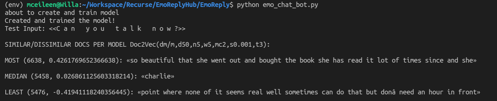

Seventh Week of RC
Day 5: Doc2Vec and EmoReply
April 5, 2019
Today I was kind to myself and coded courageously, like the determined little tree that I am. (If you don't get it, read yesterday's blog.) I had signed up to give a five minute presentation on EmoReply at the end of the day, both because I wanted to share all of our work, and because I want to practice public speaking. Feeling bold, I also decided to implement a new feature the day of the presentation. This wouldn't be a good idea in a workplace, but I came to Recurse to risks.
Eager to make my old pairing partner, Jamie, proud, I decided to add the machine learning component we had been contemplating. After talking with a Winter 2 Recurser who focused on machine learning, Jamie and I decided to use Doc2Vec to find the sentence in "The Perks of Being a Wallflower" that most resembled the user input. Next, we would return the sentence that came after this sentence as a suggested angsty autoresponse. (We'd also discussed processing the book input so that we only processed dialogue for this portion of the code, but that's still to be decided.)
I did a Doc2Vec tutorial and finished it feeling confident. However, things got tricky once I built a similar program with "The Perks of Being a Wallflower" as input. When I tried to return similar sentences from the book, it gave me wildly off base results.
Below you can see that I typed "Can you talk now?" which seems like a sentence that someone would frequently respond to in a work email context. According to my misguided model, the most similar sentence is "so beautiful that she went out and bought the book she has read it lot of times since and she"
That can't be right.
I tried a few tweaks to the model, like toying with epochs, the number of times that the model runs through the training set. For a smaller data set, such as "The Perks of Being a Wallflower," increasing the epochs can improve the model. Next, I increased the number of times that a word must occur in a book from "2" to "5". Any words that occur fewer than five times wouldn't be included in the model. The relevant equation is below:
model = gensim.models.doc2vec.Doc2Vec(vector_size=50, min_count=5, epochs=40)
I realized my error while writing this blog. Huzzah! The problem is in the code below, which I'll include for your edification.
test_input = "Can you talk now?"
inferred_vector = model.infer_vector(list(test_input))
similars = model.docvecs.most_similar([inferred_vector], topn=len(model.docvecs))
print('Test Input: <<{}>>\n'.format(' '.join(test_input)))
print(u'SIMILAR/DISSIMILAR DOCS PER MODEL %s:\n' % model)
for label, index in [('MOST', 0), ('MEDIAN', len(similars)//2), ('LEAST', len(similars) - 1)]:
print(u'%s %s: «%s»\n' % (label, similars[index], ' '.join(corpus_no_blanks[similars[index][0]].words)))
The method model.infer_vector() doesn't accept a string, which caused it to throw an error when I initially attempted to pass it the raw string, "Can you talk now?" In a rush, I wrapped the input in a list, forgetting this portion of the tutorial I read today
Note that infer_vector() does not take a string, but rather a list of string tokens, which should have already been tokenized the same way as the words property of original training document objects.
Major facepalm, y'all. I'm bummed I didn't figure this out before the presentation, but I'm glad that I know it now! Onward.